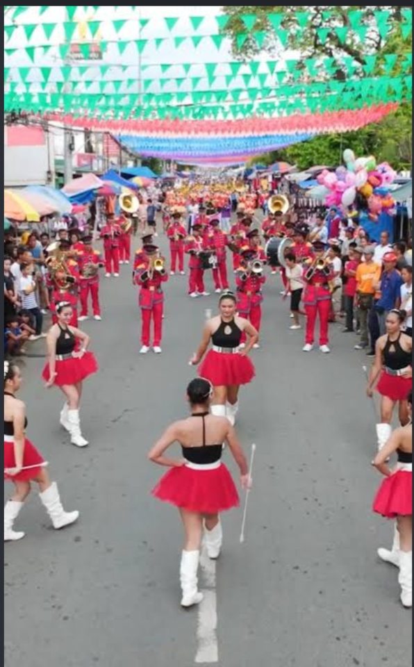

🎉 Grand Parade
Makukulay na parada na puno ng musika, sayawan, makukulay na kasuotan, at masasayang pagtatanghal sa buong bayan.
View PhotosCelebrating Faith, Culture, and Unity

Experience the colorful celebration of faith, culture, and unity in Nasugbu, Batangas. Discover the traditions, activities, and wonderful moments of our annual town fiesta.
December 2-3
In Honor of St. Francis Xavier
Ang Nasugbu Fiesta ay isang mahalagang pagdiriwang na nagpapakita ng pananampalataya, pagkakaisa, at mayamang kultura ng mga mamamayan ng Nasugbu, Batangas.
Ito ay panahon ng pasasalamat, kasiyahan, at pagsasama-sama ng pamilya at komunidad bilang parangal kay St. Francis Xavier.
Read More About Us
Makukulay na parada na puno ng musika, sayawan, makukulay na kasuotan, at masasayang pagtatanghal sa buong bayan.
View Photos
Mga tradisyonal na sayaw at musika na nagpapakita ng kultura at pamana ng ating komunidad.
Learn More
Tikman at tangkilikin ang iba't ibang masasarap na pagkain, kakanin, at mga espesyal na pagkaing lokal.
View FoodsWe celebrate the Nasugbu Fiesta to honor our patron saint, strengthen our faith, preserve our traditions, and bring people together as one community.
Want to know more about the Nasugbu Fiesta?